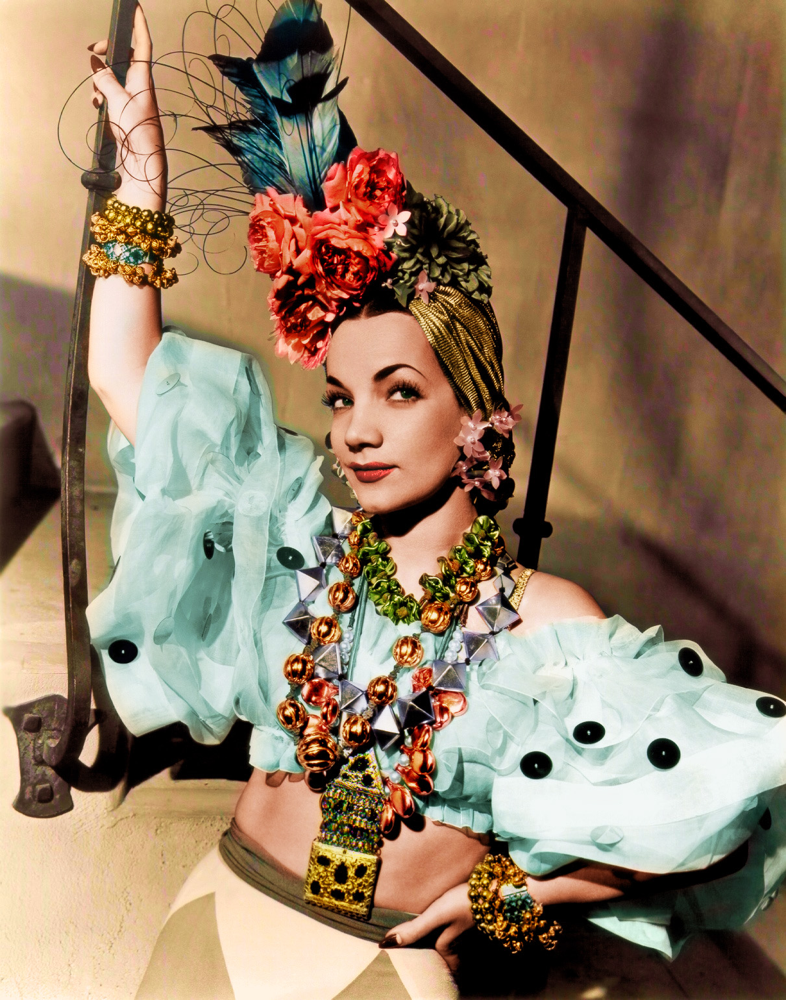
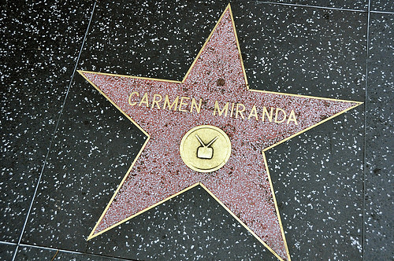

| Carmen Miranda | ||||||
|---|---|---|---|---|---|---|
| Sobre | Música | Shop | ||||
|  |
|
|||||
|
Relevância para a música brasileira Com seu estilo único e talento para a música e atuação, conquistou outros países, fixou morada nos Estados Unidos e chegou a ser a mulher mais bem paga de Hollywood, além de ser a primeira sul-americana com uma estrela na Calçada da Fama. Ela foi muito importante para a divulgação do Carnaval, pois gravou marchinhas de sucesso, que eram o forte do Carnaval na época, e popularizou a fantasia de baiana, típica do Brasil, num momento em que as fantasias eram todas de inspiração europeia. |
 | |||||
|
||||||